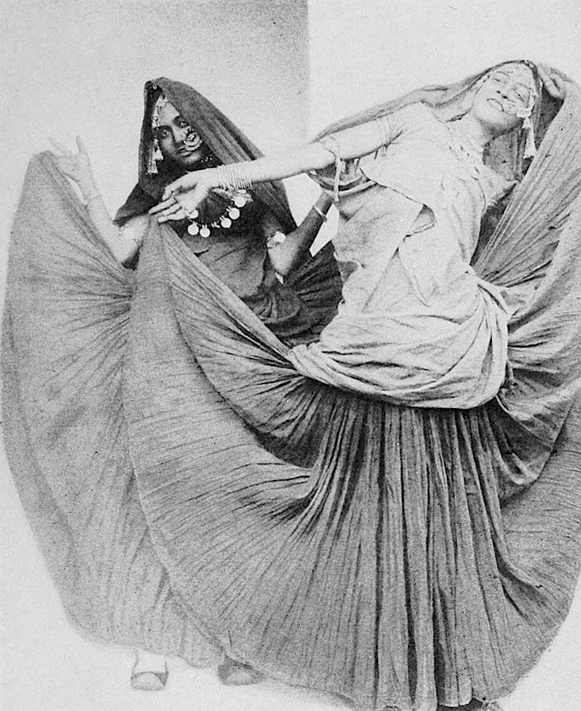

A sandbox for collective experiments on culture and ____.
It is a space that facilitates deeper cultural understanding of communities in India, fuelled by research and trans-disciplinary collaborations. It provides perspectives into the unique socio-cultural systems we live in, with a purpose to inform design for plurality.
/ Projects
Urbanization
Crossing The Lal Dora
Story of Urban Villages in India
Remediation
The Perfect Picture
Self portrait in the age of social media
/ RESEARCH INITIATIVES
NBC
Next Billion
Researching digital behaviours of NBC
Waste Management
Urban Waste Management
Story of Urban Villages in India
Healtcare
Healtcare Systems
Story of Urban Villages in India
/
CONVERSTIONS AT THE LAB

Researching digital behaviours of NBC
Researching digital behaviours of NBC
Researching digital behaviours of NBC
Researching digital behaviours of NBC
Researching digital behaviours of NBC
Researching digital behaviours of NBC
/ Work with us
Residencies
At culture lab, we act as a bridge between different expertise and hope for collaborations that push the boundaries of what we know so far.
We engage in research projects to enquire into evolving cultural scape of our country. We invite researchers to contribute and/or start a new track with us.
We invite people from across the country to conduct workshops at the lab bringing forth cultural elements from their hometown, enriching the space with stories.